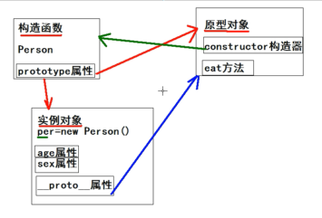

构造函数里面有原型（prototype）属性，即原型对象
原型对象里的constryctor构造器指向构造函数
通过构造函数，实例化，创建的就是实例对象。
实例对象通过__proto__属性调用原型对象里面的方法

//通过构造函数实例对象,并初始化
var arr = new Array(10, 20, 30, 40);
//join是方法,实例对象调用的方法
arr.join("|");
console.dir(arr);
//join方法在实例对象__proto__原型
console.log(arr.__proto__ == Array.prototype);